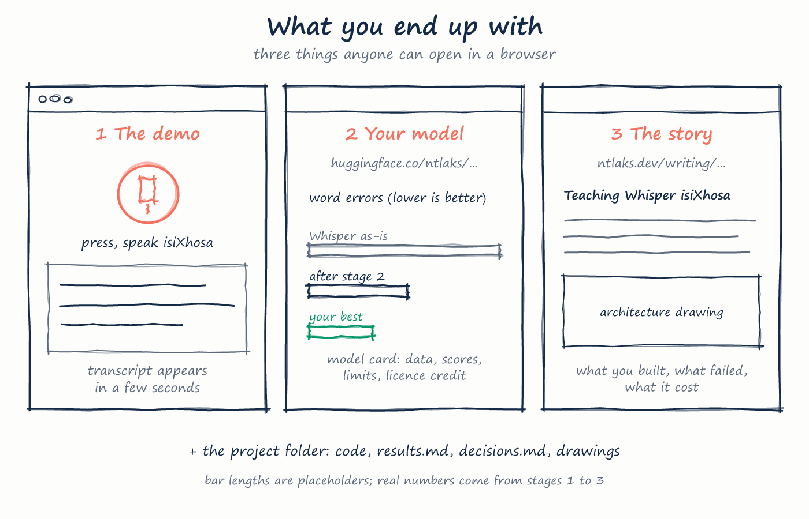
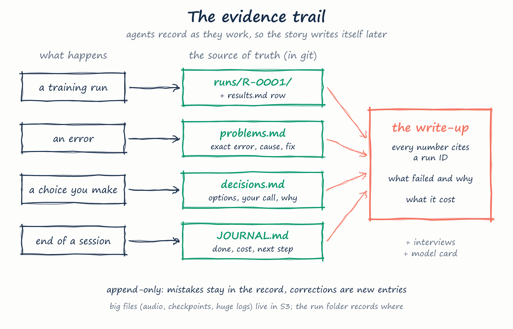

Teach an AI to hear isiXhosa.
Fine-tune OpenAI's Whisper speech model on South African speech, on a GPU you rent with your AWS credits. The goal is to learn something hard: understand how modern speech AI works from audio to text, well enough to direct its training and fix it when it goes wrong. AI coding agents write and run the code; you are the architect.

node docs/make_roadmap.js.01Why this is hard (and worth it)
Speech recognition (ASR) turns sound into text. Whisper was trained on 680 000 hours of audio and handles 99 languages, but isiXhosa is not one of them. Ask it to transcribe isiXhosa and it will guess at a language it knows and write nonsense. Teaching it a new language means adapting a 244-million-parameter transformer with a few dozen hours of speech, without destroying what it already knows.
Along the way you meet the real problems AI engineers deal with: turning audio into something a network can read, data that is messy or unbalanced, choosing what to measure, training runs that cost money and can be interrupted, and models that look good on training data but fail on new speakers.
What makes isiXhosa special for the model: long words built from many parts (agglutination), and click consonants written c, q and x. One wrong syllable makes the whole long word "wrong", so we also track errors per letter, not only per word.
Your edge: real South Africans switch between isiXhosa and English mid-sentence, especially for technical words. Most models handle that badly. Stage 4 makes that your niche, with your own voice.
02What we know before starting
Checked on 16 October 2026. Links are the sources.
The NCHLT isiXhosa Speech Corpus: about 56 hours of transcribed speech, about 200 speakers, a test set of 8 held-out speakers. Creative Commons Attribution 3.0; you accept the terms when downloading.
repo.sadilar.org · NCHLT isiXhosaGoogle FLEURS has an isiXhosa section (xh_za), read sentences. Mozilla Common Voice has only a tiny amount of isiXhosa so far.
A larger NCHLT "auxiliary" isiXhosa corpus also exists.
ElevenLabs sells isiXhosa transcription and reports a 3.1 % word error rate on FLEURS. Some community Whisper fine-tunes exist. That is fine: the point is that you can build one, and the mixed-language niche is still open.
ElevenLabs · BuzzASR/xhosaA 2025 study fine-tuned Whisper for Amharic (also poorly served): mixing FLEURS with new data worked best, training only on new data did not, and normalising the text clearly helped.
arXiv 2503.1848503The five stages
Each stage ends with something you can show. Don't start a stage until the previous one's "done when" is true.
Baseline: watch Whisper fail
| Agents do | Once you've accepted the NCHLT licence and downloaded it, agents run the stock whisper-small on 100 test clips (your laptop is enough) and score it. |
|---|---|
| You'll understand | How audio becomes a log-mel spectrogram (sound as an image), how the tokenizer turns text into numbers, and how WER and CER are computed. |
| Done when | You have one number: the baseline WER (expect it to be terrible, likely above 80 %), and you can explain why it is bad. |
First fine-tune
| Agents do | Train whisper-small on the NCHLT training set on one AWS L4 GPU (spot price, checkpoints saved to S3 so interruptions don't lose work). |
|---|---|
| You'll understand | The training loop, learning rate and warm-up, batch size vs GPU memory, mixed precision, reading loss curves. |
| Done when | WER on the 8 held-out speakers has dropped by a large margin from the baseline, and you know which kinds of words it still gets wrong. |
Make it better
| Agents do | Clean and normalise the transcripts, add FLEURS, try audio augmentation, compare whisper-small with a larger model, and compare against Meta's MMS model as an outside benchmark. |
|---|---|
| You'll understand | Running experiments properly: change one thing at a time, keep a results table, spot overfitting. |
| Done when | A results table of at least five runs, and a clear best model you can defend. |
isiXhosa + English, the way people speak
| Agents do | You record 1–2 hours of yourself explaining tutoring topics in mixed isiXhosa and English (the one hands-on job only you can do). Agents prepare transcripts for you to check, hold some out as a test set, and fine-tune on it. |
|---|---|
| You'll understand | Building your own dataset (recording, transcribing, consistent spelling), and evaluating on data the model has never heard. |
| Done when | Your model beats the stage-3 model on your mixed-language test set, with numbers to prove it. |
Ship it
| Agents do | Publish the model on Hugging Face with an honest model card (scores, data, licence, limits), a free demo page where anyone can speak and see the transcript, and a write-up on ntlaks.dev. |
|---|---|
| You'll understand | Deployment, documentation, explaining technical work to recruiters. |
| Done when | A stranger can try your model in their browser. |
04Money & guardrails
| Budget | About $15–30 of GPU time in total, from roughly $133 of AWS credits (they expire June 2027). Out of pocket: $0 while credits last. |
|---|---|
| Hardware | One g6.xlarge (NVIDIA L4, 24 GB), about $0.80/hour on demand and often less as spot. Stage 1 runs on your laptop. |
| Guardrails | The same as the Studio render farm: every job has a hard time cap and shuts itself down, checkpoints go to S3, and the $20/month GPU brake and alert stay on. |
| Reuse | The AWS plumbing (cloud/render.sh, budgets, IAM role, bucket) already exists in Mgaguli SA Studio; we adapt it for training jobs instead of renders. |
05Licences & ethics
- NCHLT is CC BY 3.0: credit the creators (CSIR Meraka Institute and North-West University, via SADiLaR) in the model card and write-up. Don't re-upload the raw audio anywhere.
- Common Voice data (if used) must not be re-hosted, and speakers must never be identified.
- Anyone else's voice in stage 4 needs their clear permission. Your own voice is yours.
- Be honest in the model card: report the test set, the numbers and where it fails. No cherry-picked demos.
- AWS credits: confirm in AWS Billing which services they cover before using anything beyond EC2 and S3.
06Words you'll meet
- ASR
- Automatic speech recognition: audio in, text out.
- Fine-tuning
- Continuing to train an already-trained model on new data, so it adapts instead of starting from zero.
- Log-mel spectrogram
- A picture of sound: time across, pitch bands up, loudness as brightness. Whisper "reads" this image.
- Tokenizer
- Splits text into pieces (tokens) and numbers them. Long isiXhosa words become many tokens.
- WER / CER
- Word / character error rate: the percentage of words (or letters) the model got wrong. Lower is better.
- Epoch
- One full pass through the training data.
- Learning rate
- How big each training step is. Too high and training explodes; too low and nothing happens.
- Overfitting
- The model memorises the training speakers and does worse on new ones. Held-out test speakers catch this.
- Spot instance
- A spare AWS machine at a discount that can be taken back at short notice; fine if you checkpoint.
- Checkpoint
- A saved copy of the model mid-training, so you can resume or roll back.
08The end product
A demo anyone can try, your model on Hugging Face with an honest report card, and the story on ntlaks.dev.

09The evidence trail
The project folder is the source of truth, not chat. Agents record every run, error and decision as they work, including failures, so the write-up, the model card and your interview answers can all point to real records.

JOURNAL.md · results.md · problems.md · decisions.md · runs/R-xxxx/ · evidence/. Rules in AGENTS.md.10What I need from you to start
- Do you speak isiXhosa yourself? It decides whether stage 4 uses your own recordings and whether you can judge the model's mistakes by ear.
- A SADiLaR account to accept the NCHLT licence and download the data (only you can accept licence terms).
- A free Hugging Face account for publishing the model.
How we work. You don't write code. Your Claude Code agents write, test, run and operate everything, from the training scripts to logging into the GPU servers.
Your job is to understand and decide: before each stage you get a one-page drawing of how it works, after it a plain-language explainer of what happened and what the numbers mean,
and every real choice (model size, data, spend) comes to you with a recommendation and is logged in decisions.md. The "you'll understand" rows above are what you should be able to explain
to an interviewer at the end of each stage.